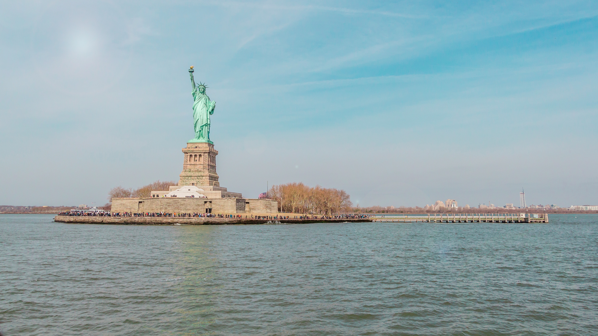

The best way to navigate the subway system in New York to avoid getting lost and stay on time is with the Google Maps iPhone app. This app has real-time updates and will show you the most efficient travel method. Goodle Maps can be used on a web browser or downloaded as an app. There is also an option that allows you to save directions for when you go underground and may lose cell service. For more information click here.
Best Views in the City
Top of The Rock
Here is a view of the Empire State building from the Top of the Rock. Photo by Gabriel Ramos on Unsplash.com.

Boat Tour
Here is a view of the Statue of Liberty from the water. Photo by Tania Fernandez on Unsplash.com.

Dumbo, Brooklyn
Here is a view of the Brooklyn Bridge from the streets of this popular Brooklyn neighborhood. Photo by Wes Hicks on Unsplash.com.